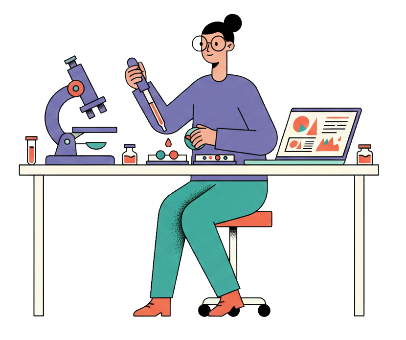
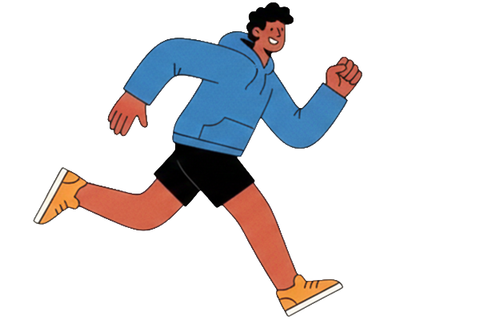
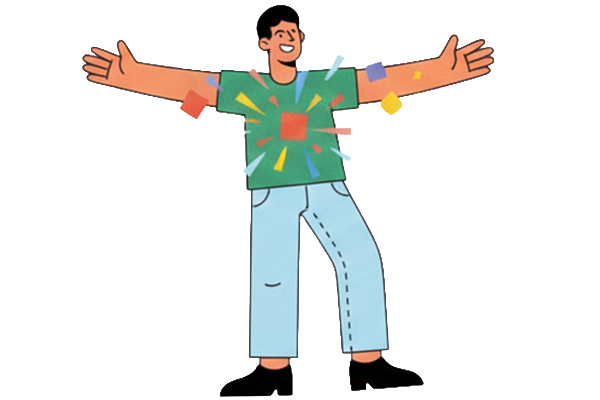
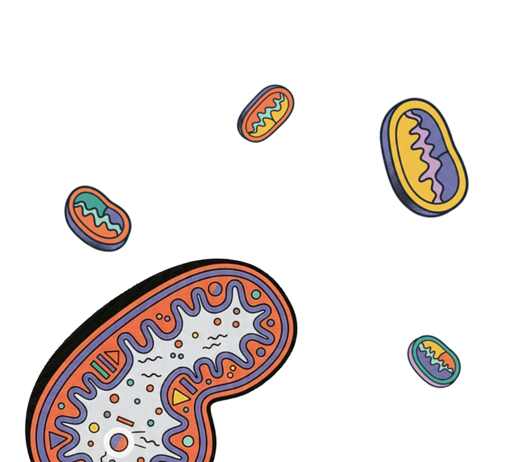
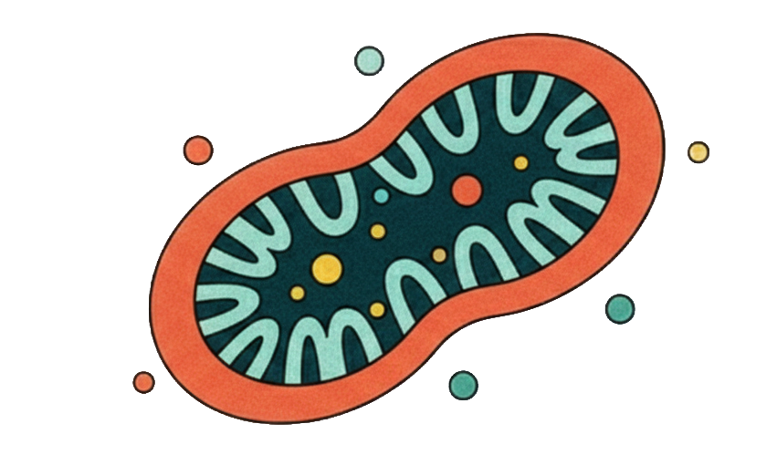

Composite Scores
複合指標スコア
血液とライフデータから読み解く、
あなたのステータス。

今回お預かりした血液データは、45歳時点の特定健診。そこに Apple Watch から直近30日の生活データを重ねて、ふたつの視点から体を読み取っていきます。
このレポートでは、ひとつひとつの数値を単独で見るのではなく、複数の指標を束ねて「体のはたらき」として読む方法をとっています。糖代謝・酸化・栄養・自律神経・脂質・炎症など、それぞれのはたらきがどんなバランスで動いているかを複合スコアとして可視化しました。
評価の軸は 「現在値 vs 精密栄養学の理想値」。一般の基準値ではなく、最適に機能している体に見られるレンジを基準に、どの系統に余白があるかを読み解きます。
※ 本レポートの内容は断定ではなく、現時点のデータから読み取れる 予測 です。今後の検査・問診・体感を重ねながら、少しずつアップデートしていく前提でお読みください。
| 項目 | 現在値 | 理想値 | レンジ | 判定 |
|---|---|---|---|---|
| HbA1c （過去2か月の血糖平均） | 5.7 % | 5.0 – 5.3 | 注目 | |
| 尿酸 （プリン体由来の老廃物） | 5.4 mg/dL | 4.0 – 4.7 | ケア |
| 項目 | 現在値 | 理想値 | レンジ | 判定 |
|---|---|---|---|---|
| LDL （悪玉コレステロール） | 118 mg/dL | < 120 | 良好 | |
| HDL （善玉コレステロール） | 66 mg/dL | > 60 | 良好 | |
| L/H比 （LDL÷HDLの比、動脈硬化リスク） | 1.79 | < 2.0 | 良好 |
| 項目 | 現在値 | 理想値 | レンジ | 判定 |
|---|---|---|---|---|
| Hb （酸素を運ぶ赤い色素） | 14.8 g/dL | 13 – 14 | 観察 | |
| RBC （酸素を運ぶ血球） | 487 万/μL | 430 – 470 | 観察 | |
| γ-GT （肝臓の解毒酵素） | 17 U/L | 20 – 30 | 観察 | |
| AST （肝臓・筋肉の酵素） | 27 U/L | 18 – 22 | 観察 |
| 項目 | 現在値 | 理想値 | レンジ | 判定 |
|---|---|---|---|---|
| eGFR （腎臓のろ過能力） | 81.9 | > 75 | 良好 | |
| BMI | 21.4 | 20 – 23 | 良好 | |
| 塩分 推定/日 | 9.9 g | < 6 | 注目 |
🟢 良好 = 理想範囲内 ／ 🟡 観察 = 理想からの乖離 小 ／ 🟠 注目 = 理想から大きく乖離。
※ 一般の「基準値」ではなく、精密栄養学の理想値で判定しています。



悪玉コレステロール（LDL）は理想域に入っており、善玉（HDL）も60を超える良好な水準。L/H比も2.0未満で、動脈硬化リスクの観点からは現時点で十分整っているプロファイルです。
腎機能（eGFR）・血圧ともに理想域。Apple Watchの活動量（11.7k歩/日）と合わせて、循環系の土台は安定しています。この基盤があるからこそ、栄養と糖代謝の微調整が効きやすい状態です。
HbA1cは「過去2か月の血糖の平均」を表す指標で、1日2日の食事では動きません。今回 5.7 という値は、日常の中で血糖が高めの時間が長くなっていることを示しています。健診上は「やや高め」レベルですが、精密栄養学の理想（5.0-5.3）からは0.4ポイント上振れており、体の代謝の重心が理想からずれ始めているサインとして読み取れます。
原因は単純な甘い物の食べ過ぎではなく、「食事と食事の間隔」「夜遅い食事」「ストレス」「睡眠の質」「運動の種類」など複数要因の合計で決まります。Apple Watchの自律神経の数値が低めなのも、同じ生活パターンから来ている可能性があります。
推定9.9g/日は、目標6g未満に対して 1.6倍。血圧は正常範囲ですが、塩分の影響は血圧だけではありません。マグネシウムやカリウムといった「リラックス系のミネラル」が体から出ていきやすくなり、睡眠の質や疲労感に影響します。
味噌汁・漬物・干物・パン・加工品など、日本人の塩分は「自覚しにくいところ」から積み上がります。3週間だけ意識すると、舌のリセットが起きて自然と薄味で満足できるようになります。
ヘモグロビン 14.8 は一般基準では正常ですが、精密栄養学の理想（13-14 g/dL）からはやや上振れ。赤血球数 487万も理想（430-470万）の上限近く。これは「鉄が不足している」というよりも、水分や材料供給のバランスに余白があるサインの可能性として読みます。
男性は鉄欠乏になりにくいと思われがちですが、運動量が多い・ストイックに食事を整えている方ほど鉄の貯金（フェリチン）は静かに減っていきます。次回検査でフェリチンを測ると、本当に補充が必要かがクリアになります。
γ-GT（ガンマGT）という肝臓の解毒酵素が 17（理想20-30）で、低めです。一般には「高いと肝臓が悪い」指標として知られていますが、低すぎても良くない。体が解毒酵素を作る材料（タンパク質・ビタミンB6・マグネシウム）が手薄になっているサインの可能性があります。
体重56kgの活動的な男性なら、1日のタンパク質目安は 約70g。これは「肉魚卵を意識して食べる量」ではなく、「3食すべてに主菜＋αが必要な量」です。特に朝食のタンパク質が血糖の安定にも効きます。
痛風レベルではありませんが、理想値より少し上。尿酸は果糖（フルーツジュース・甘い飲料・加工糖）と脱水で上がりやすい指標です。前項のHbA1cと同じく「糖の取り扱い」が改善されると、こちらも自然と下がるケースがほとんどです。
ここまでの所見を、ひとつの物語として繋ぎ直してみます。
今回の血液とライフデータから見えてくる4つの線があります。
